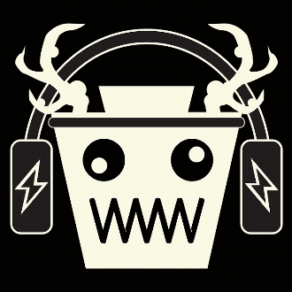

The Torun Experience
Videos & Animations
- Role
- Developer
- Type
- Programming / Game Development
- Date
- Sep 2025 ~> Dec 2025
- Project Link
- Virtual Pet Repository
> Context <
This virtual pet was a 2-part project for my freshman year Introduction to Computer Science (CS164) class at Drexel University. Most of this class is teaching basic concepts and practices in programming. The instructor of this class, Dr. Brian L Stuart, created a custom coding language called Tranquility just for this matter. It is not meant to be used beyond this class, but is instead used to expose students to the structure of other programming languages like Python or Java or C.
> Project Overview & Mockup's Origin Story <
Mockup operates as a complex finite state machine transitioning between several emotional and behavioral states (such as Scared, Happy, Insane, Hungry, or Dead) based on user interactions, internal timers, and random probabilities. Each of the 9 states represents a specific emotion and players can preform different actions (such as playing, shocking, feeding, or neglecting) to allow Mockup to transition between states. This structure supports the emotional unpredictability that I wanted Mockup to express through a mix of code logic and random behaviors, just like the way Pokemon behave.
> The Approach & Design Direction <
Mockup most resembles the Pokemon Jigglypuff. In Pokemon, animal-like creatures are captured, trained, attacked, etc, and are capable of showing various feelings. This monstrosity of a machine mimics the typically unpredictable nature of Pokemon. Just like how Jigglypuff is a fairy-type Pokemon that has some quirky actions when angered and can sing in certain scenarios, Mockup is a mythical somewhat-domestic beast that is often calm and friendly, vibes to music, and has some unpredictable behaviors in certain actions and states.
> Design Gallery <

> Outcome <
One important thing I learned is that state diagrams are a powerful tool for visualizing and understanding the behavior of complex systems. By mapping out all possible states and transitions, I was able to identify potential issues and optimize the user experience. Also, I found the tabular format to be much easier to maintain than a graphical representation, particularly when it came to debugging and making changes.